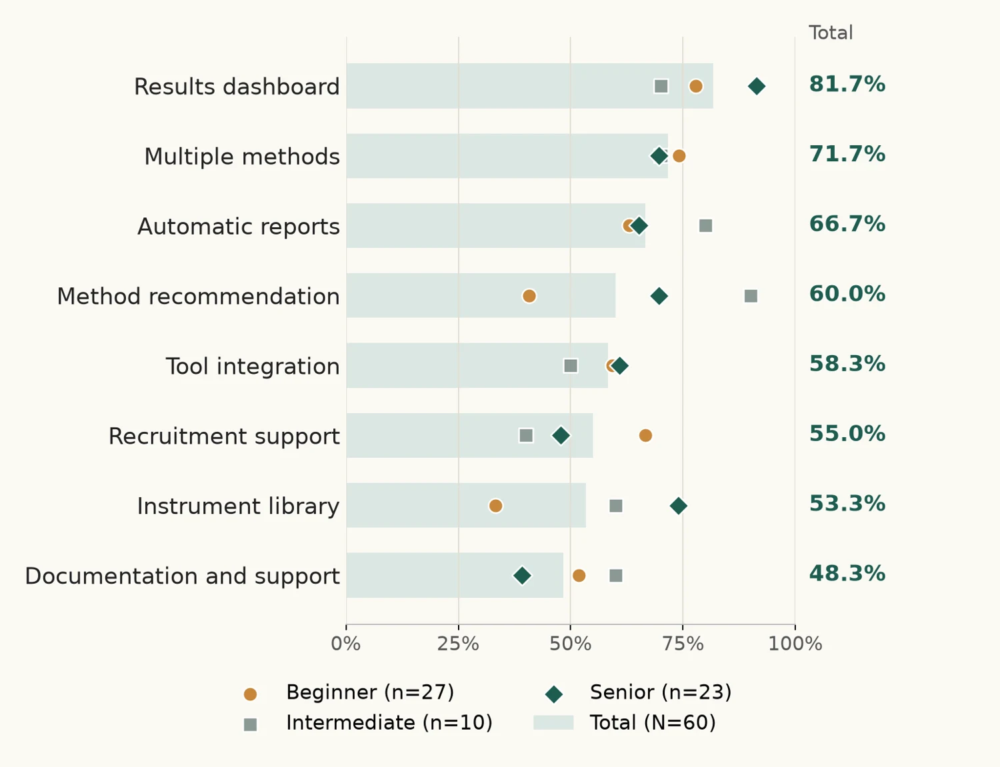
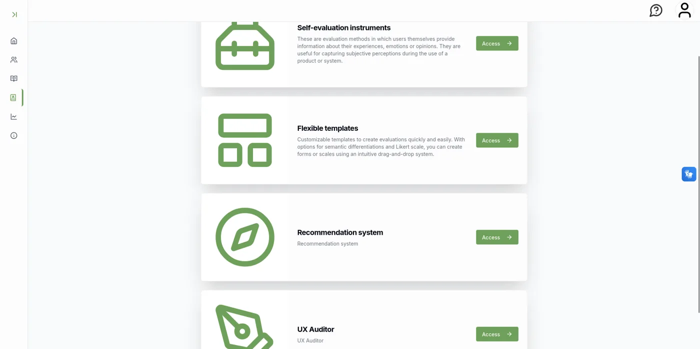
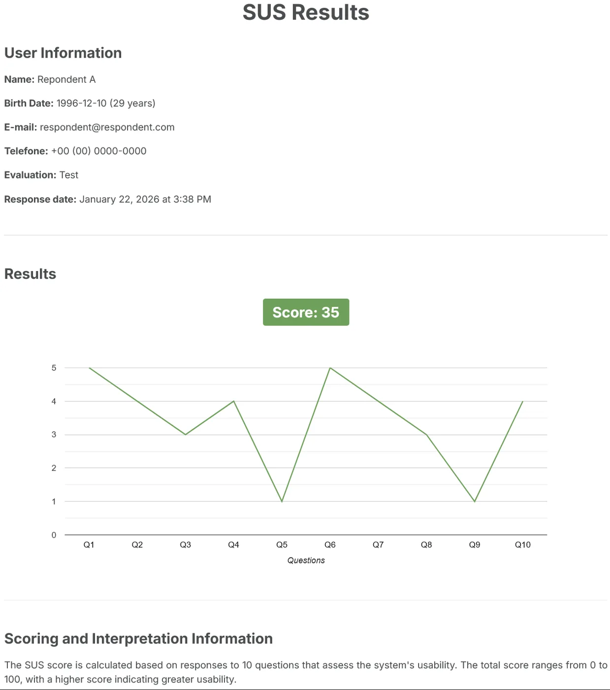

Summary
Evaluating interactive systems still takes a lot of work, especially for people who are just starting out. There are many methods, and the hard part is choosing the right one and applying it consistently. In my PhD, I am developing EmoFrame, a digital environment that brings together instruments and services that support HCI evaluation. Before setting the product's priorities, I ran a survey with 60 professionals to understand what they expect from this kind of tool. The most frequent request was a results dashboard (81.67%), and needs changed with experience level.
Context
EmoFrame started in my master's, when I brought emotional assessment instruments from paper to digital. In the PhD, the goal grew: to support the whole evaluation cycle, from choosing a method to interpreting the data.
The literature shows that the problem is not a lack of methods, but a lack of support for choosing among them and applying them consistently. Existing tools usually cover only part of the cycle, such as remote testing, interaction data capture or inspection management.
Research question
What do computing professionals who evaluate interactive systems expect from a tool that supports evaluation? Do these expectations change with experience level?
Process
1. Survey design
An online questionnaire with four sections: profile, evaluation practices, difficulties and limitations, and expectations and needs. This case shows only the results of the last section, which were published at IHC 2026 and used in design decisions.
2. Inclusion criteria
- Being a computing professional in Brazil.
- Having experience (beginner, intermediate or senior) evaluating interactive systems, having taken part in planning, conducting or analyzing at least one evaluation.
- Being 18 or older.
3. Data cleaning
Incomplete responses and responses from people outside the criteria were excluded, leaving 60 valid responses.
4. Analysis
Descriptive analysis of the responses, segmented by experience level.
Ethics: approved by the Research Ethics Committee of ICB/USP (CAAE 93402525.0.0000.5467), with informed consent and anonymized data.
Who took part
| Profile | Distribution |
|---|---|
| Evaluation experience | 45% beginners (0–3 years), 16.67% intermediate (4–6 years), 38.33% senior (7+ years) |
| Sector | 81.67% academia, 13.33% industry, 2 in both and 1 in government |
| Education | 40% bachelor's, 21.67% master's, 38.33% PhD |
| Age | 46.67% up to 30, 30% between 31 and 40, 23.33% 41 or older |
| Gender | 55% cis men, 45% cis women |
Key findings
Open to new tools
46 of the 60 participants already use digital tools to support evaluations, and 59 said they were interested in trying new solutions.
What people want

The most requested features were a results dashboard (81.67%), support for multiple methods (71.67%) and automatic report generation (66.67%).
Needs change with experience
- The results dashboard was the most valued item among senior professionals (91.3%).
- The instrument library appealed to 73.91% of senior professionals and 33.33% of beginners.
- Method recommendation was chosen by 90% of intermediate, 69.57% of senior and 40.74% of beginner participants. The intermediate group has only 10 people, so this percentage calls for caution.
- Recruitment support was more popular among beginners (66.67%).
Saving time
One third of participants (20 of 60) want to cut the time spent on evaluations by more than 40%. Among senior professionals, this rises to 43.48%, compared with 30% of intermediate and 25.93% of beginner participants.
From data to design decisions


| What the survey showed | How it shaped EmoFrame |
|---|---|
| A results dashboard is the most wanted feature | Each instrument has a results page with charts and tables, available as soon as the person responds |
| Strong interest in several methods in one place | A library of instruments from Computing, Psychology and Gerontology, such as SUS, SAM, PANAS, GDS and BRUMS |
| Wish to reduce time and manual steps | Services gathered in a single environment, a three-step evaluation setup and automatic score calculation |
| Beginners and experienced professionals ask for different things | Contextual method recommendation for those who need guidance, and library and analysis features for those who work more independently |
Today, the self-report instruments and the Likert and semantic differential scale generator are implemented. Method recommendation, which led to the EVA study, is in internal testing. Heuristic evaluation support is a prototype, and the automated usability and accessibility auditor is under development.
Limitations
- The case shows only one of the survey's four sections. Practices and difficulties will be analyzed in future publications.
- The sample is mostly academic (81.67%), which limits generalization to industry.
- Experience groups differ in size, and the intermediate group has only 10 people.
- The framework has not yet been empirically validated with end users.
Next steps
The survey is the first of five validation stages. It is followed by interviews with HCI experts and experts from fields such as Psychology, heuristic evaluation with experienced evaluators, usability testing with the target audience and case studies in real settings. Each stage feeds the next.
What this case shows
- Listening to users before setting product priorities, instead of starting from assumptions.
- Segmenting by profile and reading each group with its sample size in mind.
- Linking each finding to a concrete design decision.
- Being clear about what already exists, what is under development and what still needs validation.